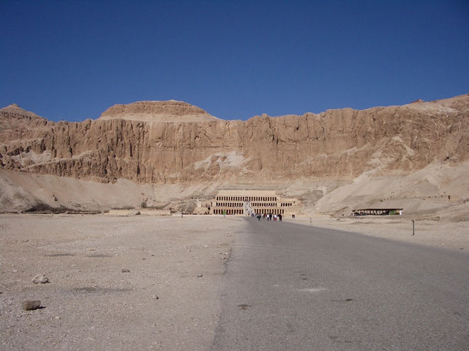
The Temple of Deir el-Bahri (Queen Hatshepsut) is magnificently situated at the foot of the sheer cliffs fringing the desert hills, the light-coloured, almost white, sandstone of the temple standing out prominently against the golden yellow to light brown rocks behind.
The temple complex is laid out on three terraces rising from the plain, linked by ramps, which divide it into a northern and a southern half. Along the west side of each terrace is a raised colonnade. The terraces were hewn out of the eastern slopes of the hills, with retaining walls of the finest sandstone along the sides and to the rear.
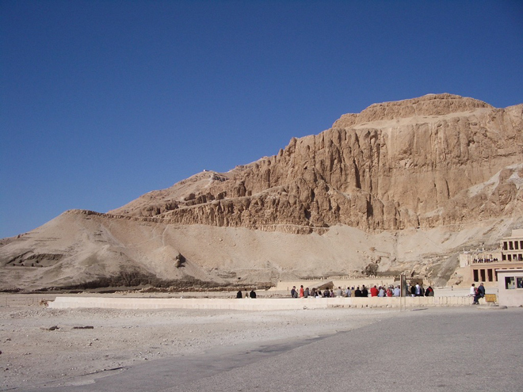
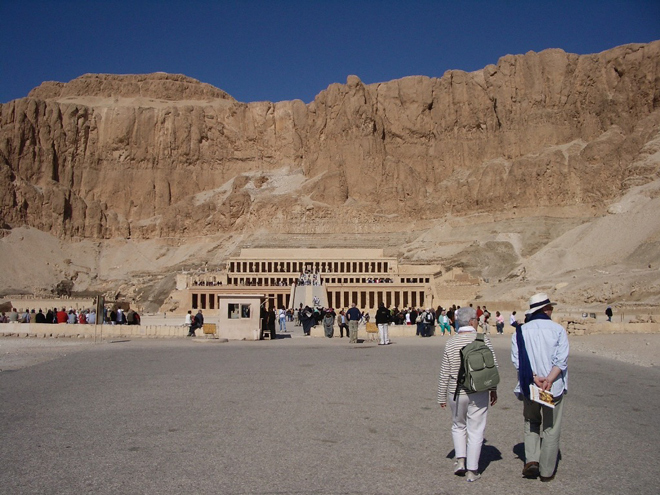
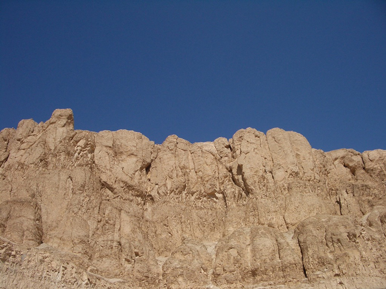
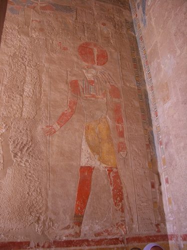
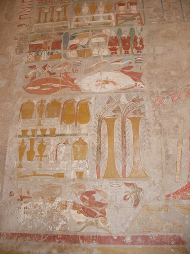
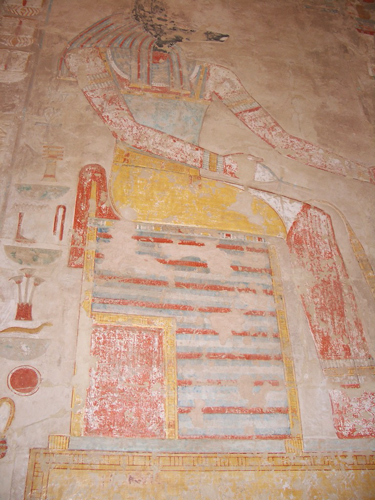
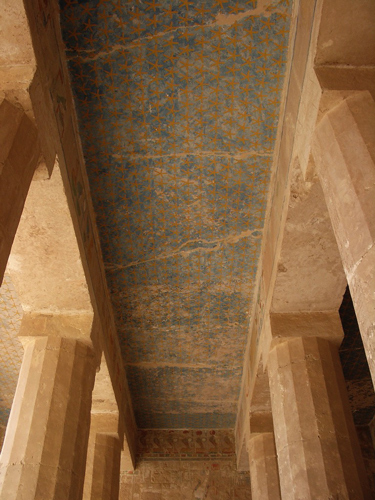
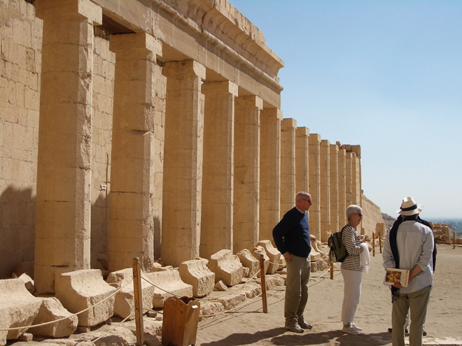
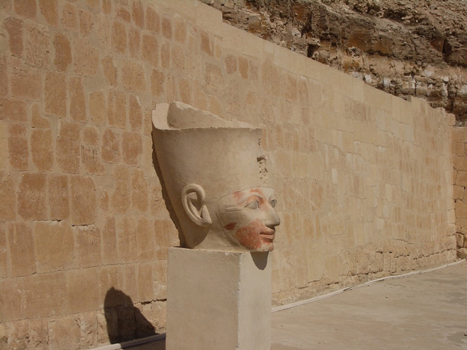
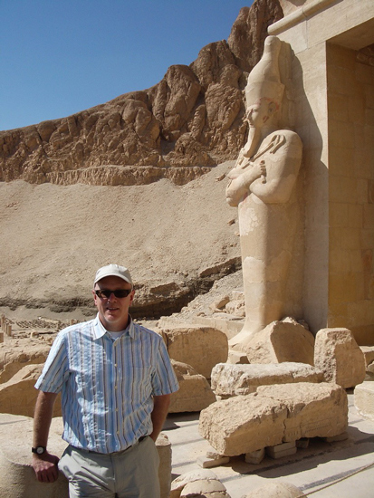
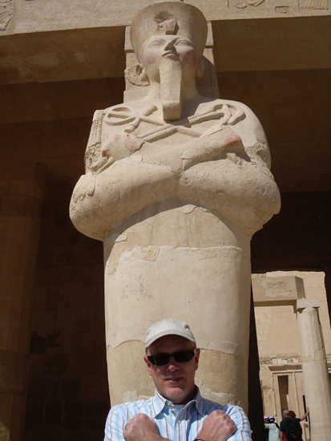
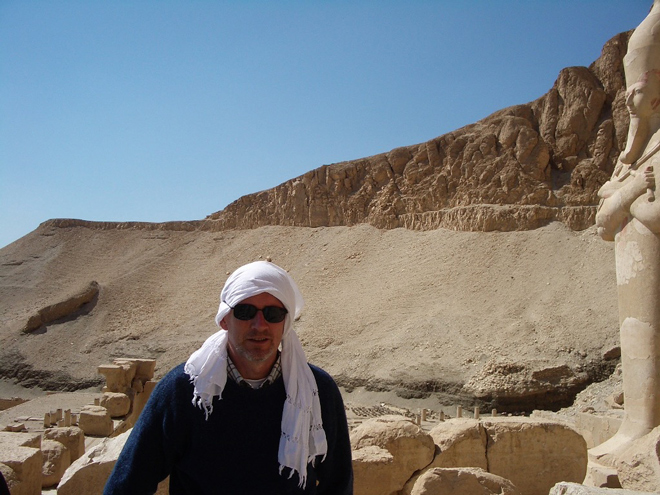
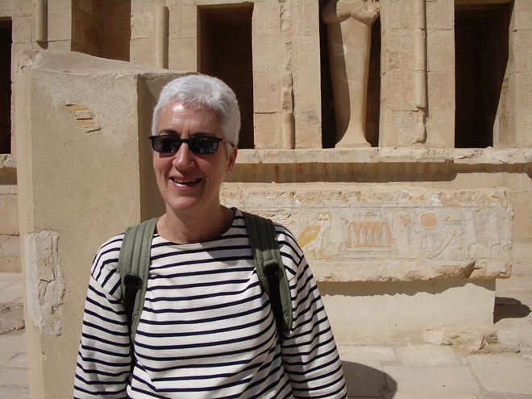
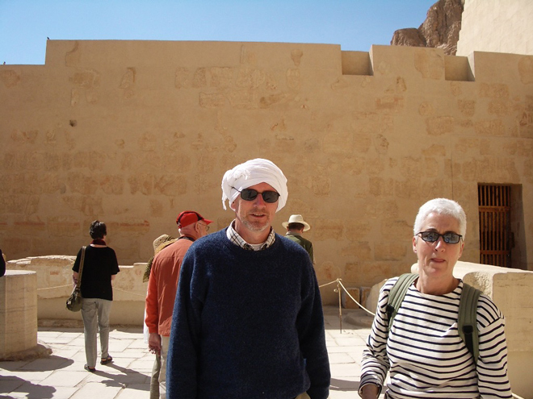
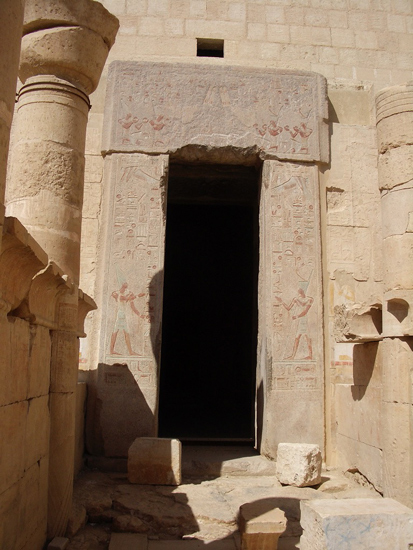
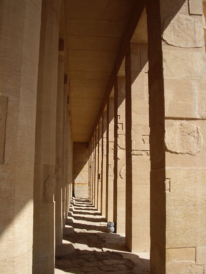
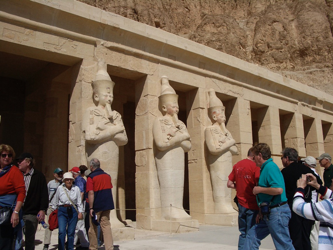
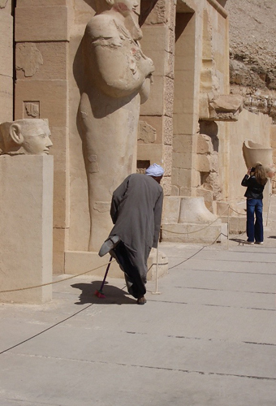
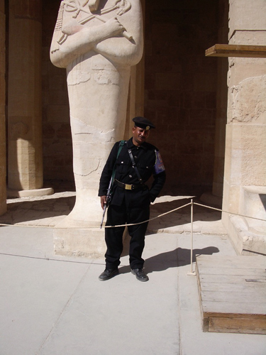
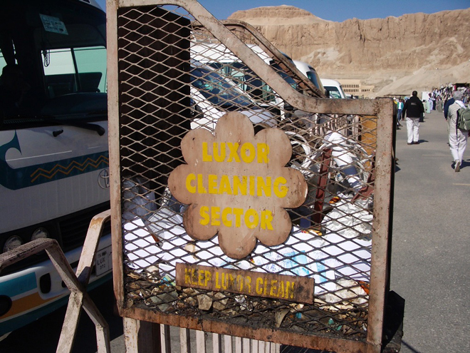